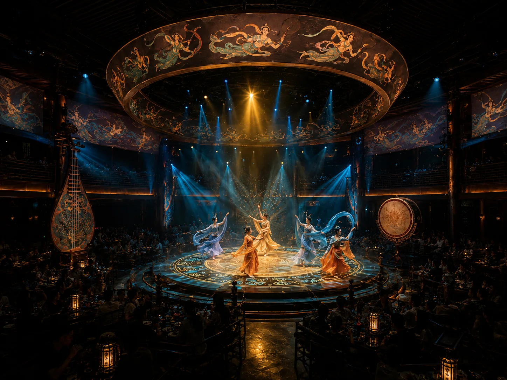
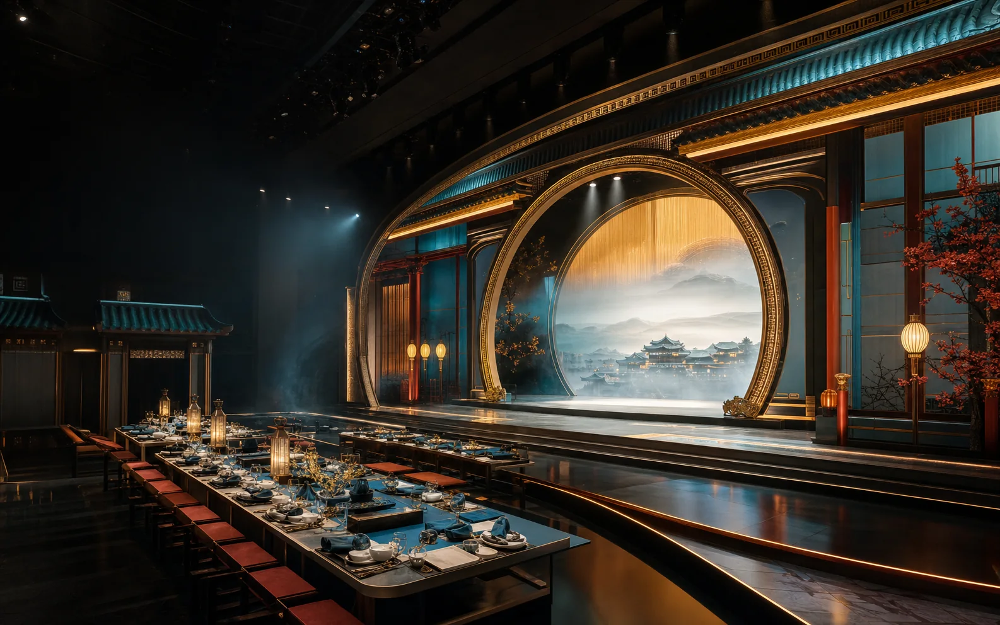
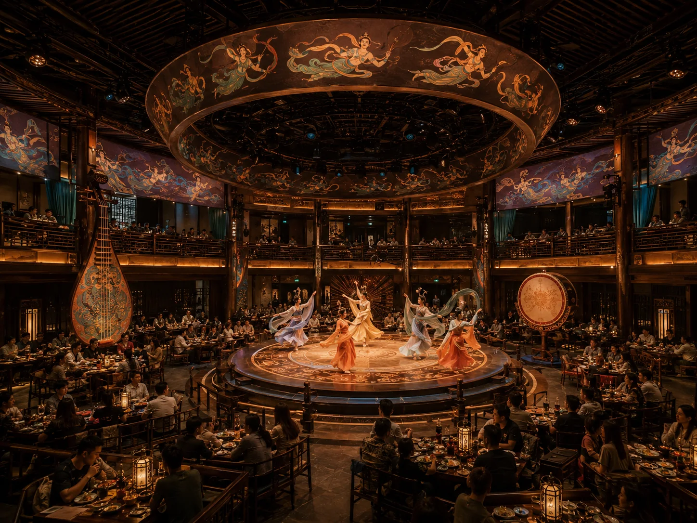
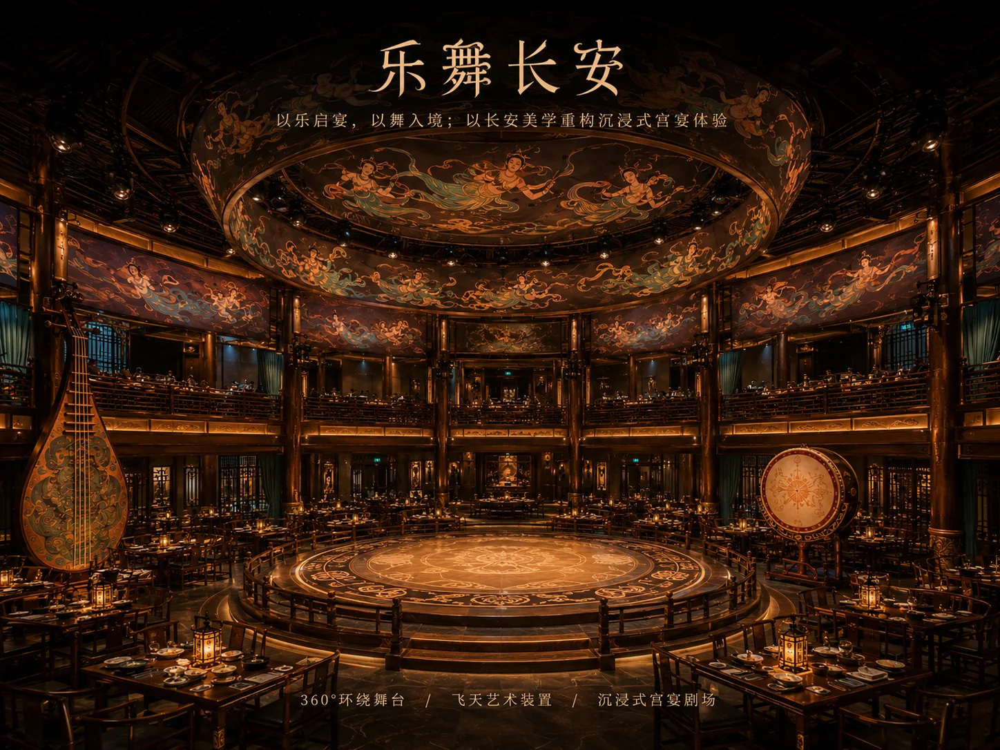
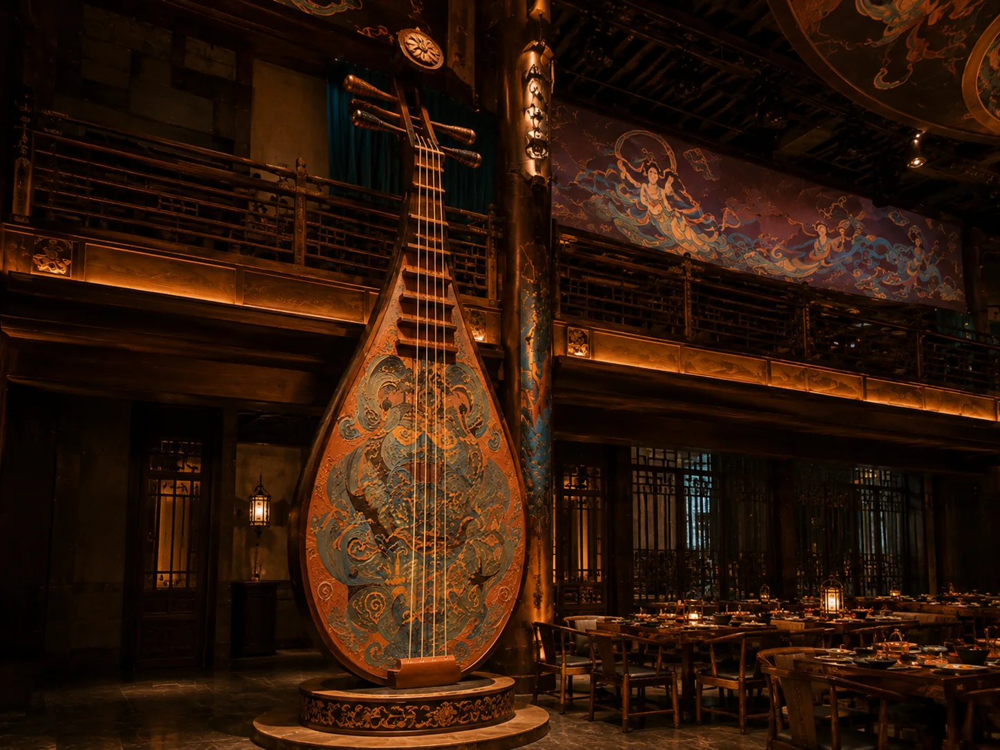
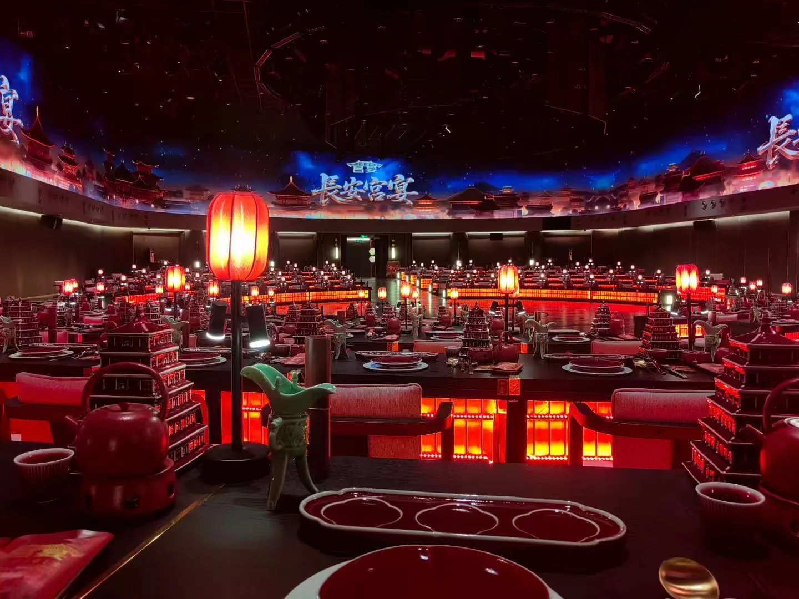
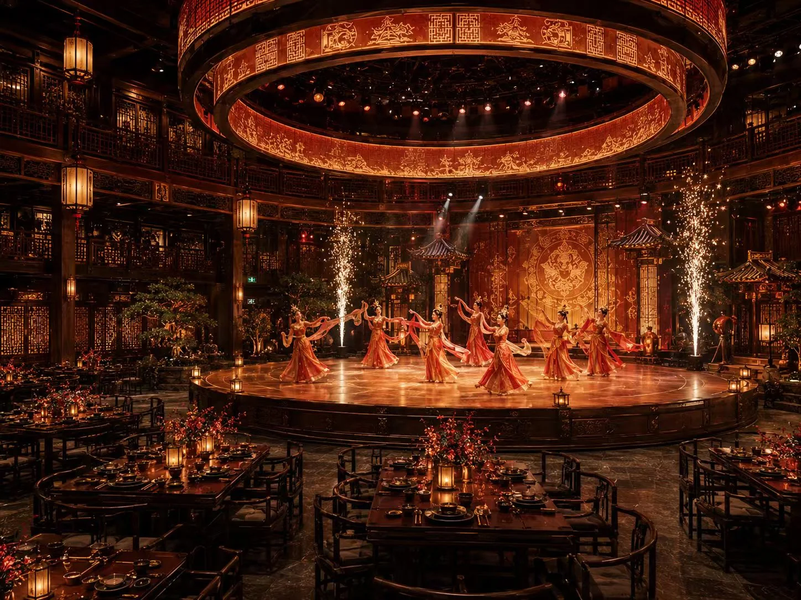
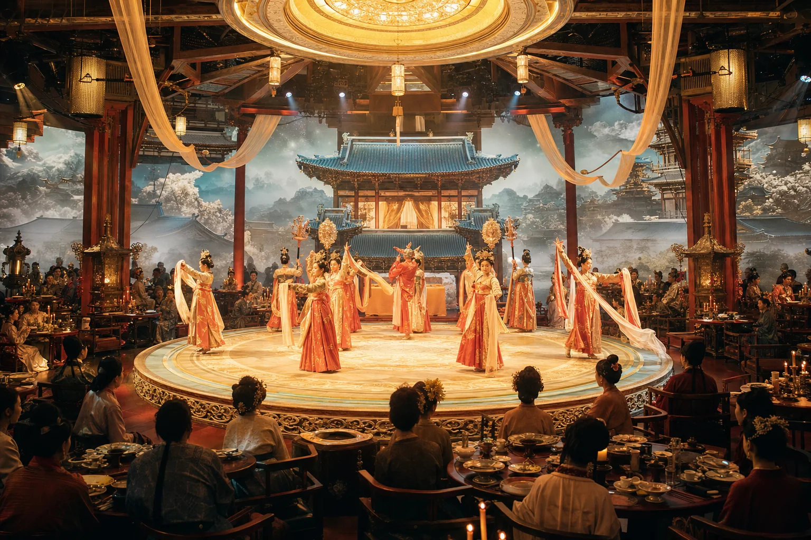
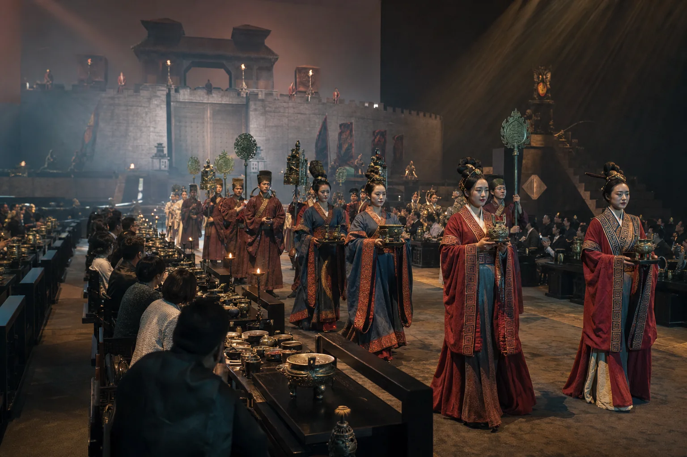

01盛唐 · 乐舞
乐舞长安
以宾客入城为故事起点，胡旋、鼓乐与宫廷雅舞轮番登场，在一席宴饮中展开长安长卷。
CULTURAL DINING SHOW
为文旅目的地、景区、古城与酒店，把文化表达、沉浸演艺、特色餐饮和城市传播组织成一套可运营的宫宴餐秀。

WHAT WE CREATE
从城市文化与市场需求出发，将故事、仪式、演艺、餐饮和空间整合为完整产品。让游客愿意专程而来，也让项目具备长期传播和内容更新的理由。
CASE INSPIRATION
以下内容用于展示宫宴餐秀的策划方法与空间方向，不代表参考项目由艾里森承建。

01以宾客入城为故事起点，胡旋、鼓乐与宫廷雅舞轮番登场，在一席宴饮中展开长安长卷。

02让壁画中的飞天、乐器与丝路色彩走出画卷，以光影穹顶包围宾客，讲述文明远行。

03以天街夜宴为空间原型，中心舞台连接上下观演席，飞天艺术装置形成入场记忆点。

04从一把琵琶展开乐舞故事，让器物同时承担空间主角、拍照传播与演奏互动。

05以城市城阙为视觉母题，环形影像随菜序切换晨昏与节庆，让每次上菜推进一段故事。

06朱红宫灯、花树与环形天幕营造上元夜，舞者从宴席之间入场，把节庆情绪推向全场。

07围绕月宫、霓裳与盛世礼乐构建多幕演艺，圆形舞台让不同席位拥有完整观演视角。

08以古城迎宾、青铜礼器与地域礼仪为线索，仪仗穿席而行，让宾客成为大典亲历者。
OUR METHOD
先找到项目真正值得被看见的文化内核，再用完整产品逻辑把它变成可进入、可品味、可分享的体验。
FULL SERVICE
跨专业整合，减少沟通损耗，让文化表达、投资边界与最终体验保持一致。
市场定位、文化母题、产品模型与投资边界。
故事脚本、礼仪动线、餐秀结构与菜品叙事。
舞美、灯光、声场、软装与沉浸式场景。
票价体系、服务流程、传播物料与开业辅导。
START A PROJECT
发送场地照片、平面尺寸、计划桌数、目标客群、预算范围和计划开业时间，我们先判断适合轻量升级，还是完整宫宴餐秀。